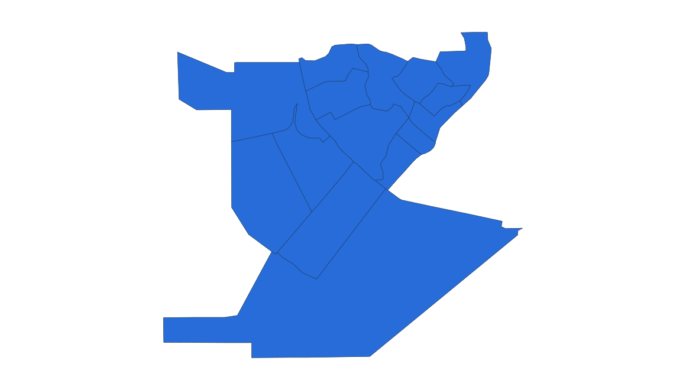
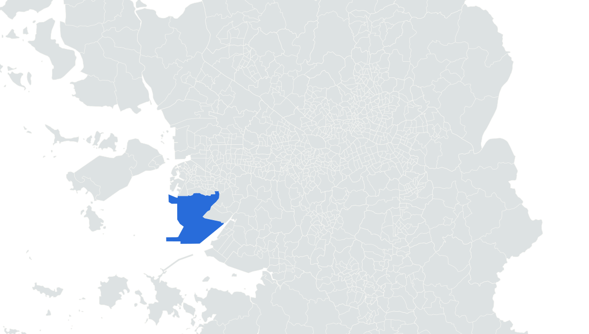

부동산 데이터 | 신혼부부가 사는 곳
17위 인천 연수구
2024.11.1 거주 기준 · 신혼부부 전체 · 단위: 쌍

송도 센트럴파크 수로·도시풍경
실제 장소 자료사진 · 촬영 2021
사진: José Carioca · CC BY-SA 4.0
거주 신혼부부
7,875쌍


연수구 경계
수도권 내 위치
앞뒤 순위 · 같은 0–16,000쌍 척도
15
???
???
16
???
???
17
연수구
7,875
18
기흥구
7,686
19
중랑구
7,547
통계: 통계청 「2024년 신혼부부통계」 수도권 구별 집계 | 지도: SGIS · vuski/admdongkor, CC BY 4.0 · 2024 경계